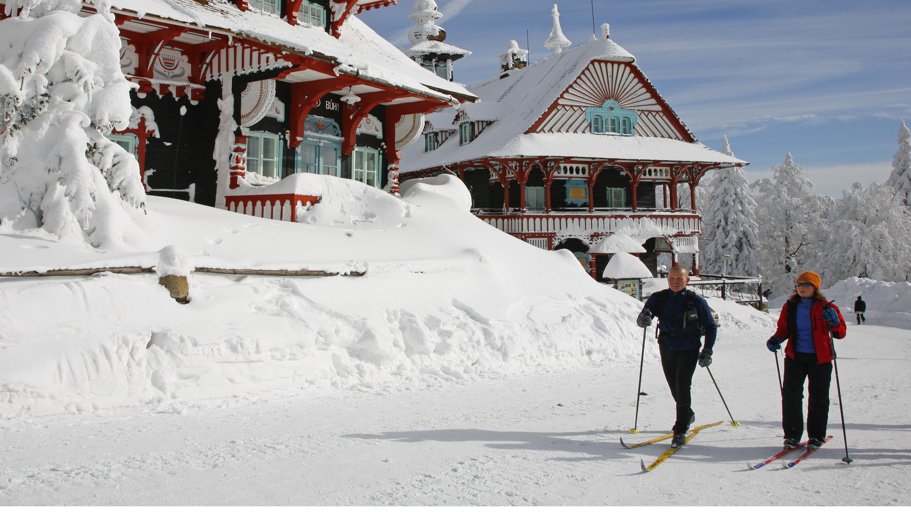
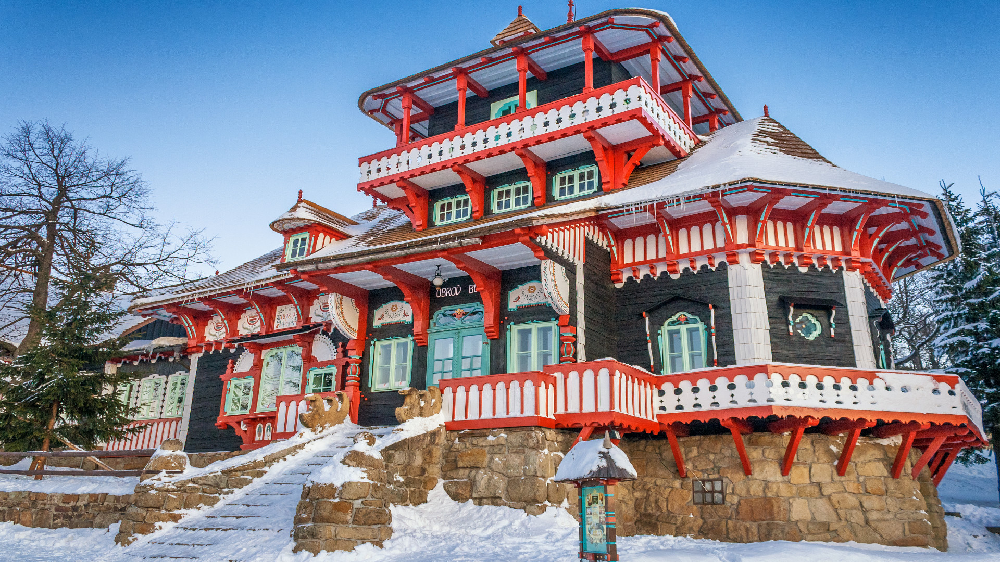
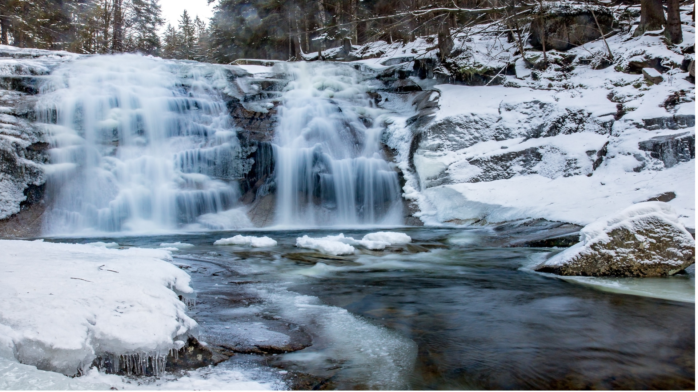
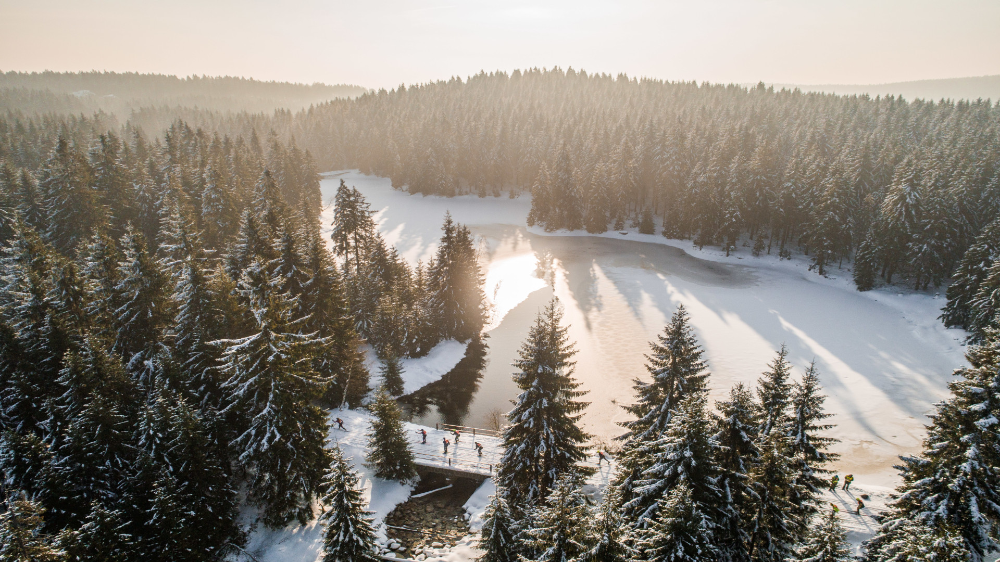
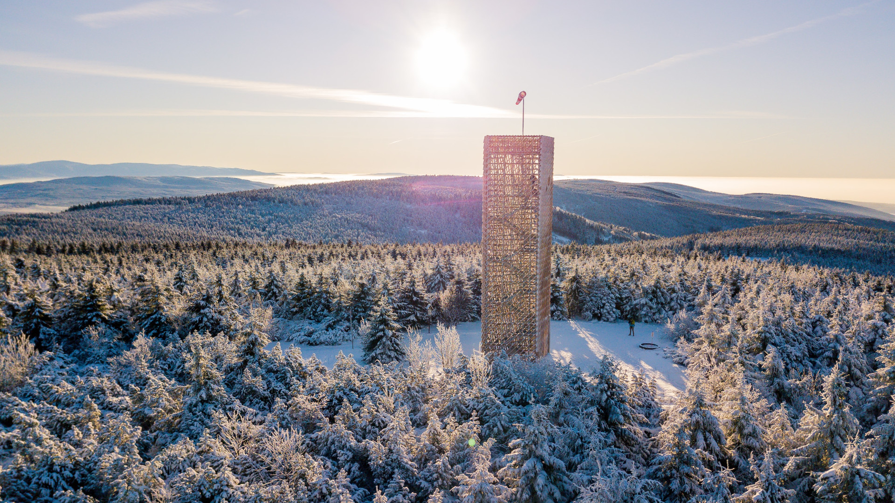
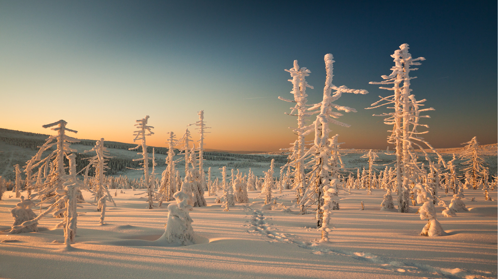
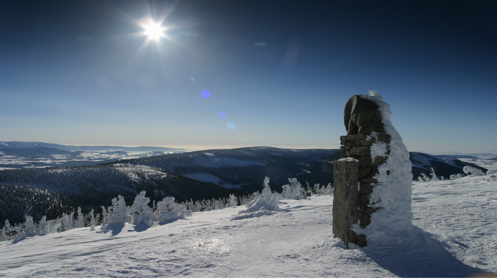
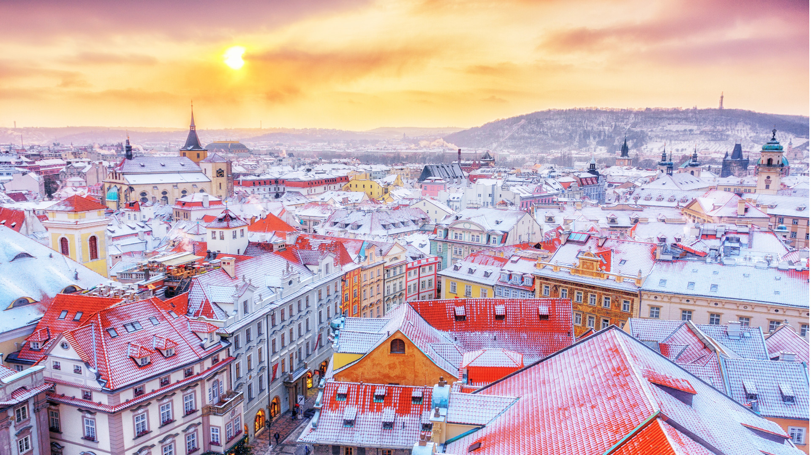
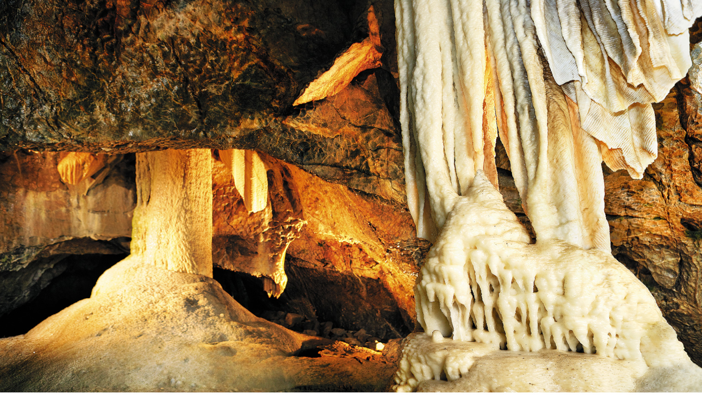

8 paisajes invernales mágicos en la República Checa
Son tantos los paisajes invernales de la República Checa que merecen estar en este listado que nos ha costado seleccionar solo ocho. Entre ellos encontrarás un poco de todo: panorámicas de impresión, estampas bucólicas, casitas de cuento en medio de la nieve, y grutas que se ocultan en las profundidades de la Tierra. Si pudieses elegir solo uno, ¿con cuál te quedarías?
 Share
Share
 Tweet
Tweet
 Pin
Pin
 Email
Email
 Share
Share
Por: Pepa García
Publicado: Febrero 01, 2021
Viajar a la República Checa en invierno, cuando una capa de nieve cubre muchos de sus escenarios más bellos, es como descubrir un país nuevo, más blanco, más bucólico, y con ese toque mágico que inspira dicha estación. Ha llegado el momento de soñar con paseos por paisajes nevados, de sentir cómo caen los copos tras la ventana, de asomarnos a miradores en la cima de una montaña o, de pronto, entrar en un restaurante para degustar una rica sopa checa junto a la chimenea. Sobre el placer que nos produce el invierno en ciertos rincones de la República Checa versa este artículo. Sigue leyendo porque vamos a contarte nuestros espacios favoritos con todo lujo de detalles.

Estación de esquí Pustevny, en los montes Beskydy. © MSTourism
1. Libušín y Maměnka, dos casitas de cuento en Moravia del Norte
Cuando la temperatura desciende por debajo de cero grados y las rutas por la montaña dejan de presentarse como una propuesta apetecible, es el momento de disfrutar del calor de una chimenea, de un chocolate caliente y de la calidez de un refugio de montaña. Dos lugares bellos y pintorescos son Libušín y Maměnka, dos casas de madera decimonónicas diseñadas por el arquitecto Dušan Jurkovič. Ambas están protegidas como monumentos históricos y culturales nacionales, y han sido sometidas en los últimos años a un proceso de rehabilitación total para devolverles su belleza original. En dicha reforma se ha respetado su arquitectura tradicional de Valaquia y Kysuce, sus rasgos art nouveau, el tipo de material y las técnicas artesanales que el propio Jurkovič empleó en su día. Esta fue, de hecho, una de las primeras obras del arquitecto checo.

Casa Libusin, en los montes Beskydy. © Shutterstock
Además, no hay por qué conformarse únicamente con admirar su estampa de postal desde el exterior sino que desde el pasado verano han reabierto al público y funcionan como hotel (Maměnka) y restaurante (Libušín). ¿Por qué no disfrutar sin prisas de los paisajes de las montañas de Beskidien? Los aficionados al deporte blanco encontrarán en el entorno de Pustevny hasta once remontes y telesillas.

Cascadas de Mumlava. © Shutterstock
2. Cascadas del Mumlava, una fantasía de hielo
Las Montañas de Krkonoše (o de los Gigantes) no seducen únicamente con sus inmensos paisajes invernales, que los checos recorren practicando esquí de fondo en cuanto caen los primeros copos de nieve. Tampoco son sus profundos valles o glaciares la única atracción de este parque natural, aunque su belleza sea innegable... sino que, ocultas en mitad del bosque, las que más enamoran son las cascadas del río Mumlava.
Si en primavera el caudal de estas cascadas parece de terciopelo, en invierno su energía se transforma en hielo, y ese salto al vacío desde sus 10 metros de altura deja de cumplir su misión al congelarse. El conjunto de estos saltos inmaculados y rodeados de bosque nevado es suficiente razón para dirigirse a la pequeña ciudad de Harrachov y emprender la ruta que lleva a conocer uno de los paisajes invernales más selectos de la República Checa.

Montes Jizera. © DJI
3. Huellas en la nieve en los Montes de Jizera
Un país como la República Checa, con un territorio montañoso que se sitúa entre los 1.000 y 1.500 metros de altitud, es el paraíso para los apasionados del esquí sea cual sea su modalidad favorita. Quienes gocen con los paisajes bucólicos y el ritmo acompasado del esquí de fondo deben animarse a realizar la Jizerská magistrála o Arteria de Jizera, una de las rutas de esquí de fondo más hermosas de Chequia.
Esta ruta transcurre por el norte de Bohemia, en los Montes de Jizera (Jizerské hory), junto a la frontera polaca. En sus más de 200 kilómetros, las subidas se alternan con las bajadas y, a veces, incluso cruzan al país vecino. El silencio de este bellísimo entorno nevado, solo interrumpido por los murmullos del viento que salen de algún bosque, es la mejor terapia para recuperar el equilibrio personal. Existe también la posibilidad de participar en la competición de esquí de fondo Jizerská padesátka (padesátka = cincuenta, 50 kilómetros por los Montes de Jizera) pero se perderán, con la velocidad, parte del alma del paisaje.

Mirador de Velka Destna. © David Stejskal
4. Vistas desde el mirador de Velká Deštná
Seguimos este viaje por los grandiosos paisajes invernales de Bohemia del Este y la panorámica que brinda la cima del Velká Deštná, la cumbre más alta de las montañas Orlické hory. A más de mil metros de altitud sobre el nivel del mar se sitúa un moderno mirador, elegido el más bonito de Chequia en 2020, que tiene forma de torre de vigilancia forestal. Esta estructura de 19 metros de altura posee un corazón de acero revestido de madera, por lo que se integra perfectamente en el paisaje. Su diseño está inspirado en el clima extremo de esta cumbre, con una lluvia frecuente que baila al compás de las corrientes de aire. Una cómoda escalera lleva hasta la última planta, al descubierto, para observar a placer los bosques nevados y las siluetas desdibujadas de las montañas que lo circundan.

Nieve en las montañas Jizera. © Jan Strakos
5. La senda que inspiró a Dvořák
Entre las rutas invernales más atractivas de la República Checa se encuentra la senda que transitaba frecuentemente el compositor checo Antonín Dvořák entre su aldea de nacimiento, Nelahozeves, y la ciudad de Kralupy nad Vltavou. Los bosques eran para este gran músico del siglo XIX una gran fuente de inspiración. Incluso apuntaba en los puños de su camisa algunas de las ideas musicales que llegaban a su cabeza durante los paseos. Escuchar alguna de sus composiciones u óperas mientras se recorre el camino es una experiencia inolvidable.
La senda de Dvořák transcurre por la ribera del río Moldava, a unos 30 kilómetros de Praga, entre bosques y curiosas rocas esculpidas por la acción de los elementos durante siglos. El paseo invernal se puede completar con una visita a la casa natal del músico, el palacio de Nelahozeves y la Reserva Natural de Hostibejk.

Montaña Kralický Sněžník. © Jaroslav Horák
6. La cumbre nevada de Králický Sněžník
Ascender hasta la montaña Králický Sněžník, la tercera cumbre más alta del país, proporciona una doble recompensa: las vistas de infarto que se obtienen por el camino, y las panorámicas de 360 grados que esperan en la cumbre. A 1.424 metros de alturas y con el cielo despejado se pueden divisar: la cima más alta de Chequia, Sněžka; también la más elevada de Hrubý Jeseník, Praděd; y profundos valles y montañas cubiertos de árboles que pugnan por sobresalir entre sus vecinos. Sólo hay una mala noticia para los menos montañeros: para subir a Králický Sněžník, apodada ‘el techo de Europa’, no hay carreteras ni telesillas, sólo se llega tras un poco de esfuerzo físico. El punto más seguro para acceder es el pueblo Střibrnice.
¿Algunas curiosidades sobre esta montaña? Se encuentra en el punto de confluencia de tres mares (Negro, Báltico y Nórdico), y es el lugar donde nace el río Moldava, que luego atraviesa Moravia de Norte a Sur. En lo más alto se sitúa un pequeño elefante (slůně) de piedra, símbolo de la montaña, cuya fotografía no falta en los perfiles de alpinistas y aficionados checos a la montaña.

Praga nevada. © Shutterstock
7. Praga en invierno, aún más atractiva
Cualquier ciudad de la República Checa resulta aún más encantadora cuando una capa de nieve cubre tejados, puentes, palacios, castillos y monumentos. En el caso de la capital checa, ese halo romántico que la envuelve en invierno invita a recorrer sus calles vestidas de blanco y sin apenas turistas. Y con el aliciente de descubrir una nueva perspectiva tanto de la Ciudad Vieja como de barrios periféricos como Žižkov, Vinohrady o Holešovice. Consulta todos los itinerarios con detalle en Rutas a pie por Praga.

Gruta en el Karst Moravia. © Libor Svacek.
8. Cuevas y gargantas del Karst de Moravia
Que “lo esencial es invisible a los ojos”, además de ser una frase de El Principito es una gran certeza en la Reserva Natural del Karst de Moravia de la región de Moravia del Sur. Más allá de la superficie de este espacio protegido se ocultan más de mil cavernas, cañones, grietas y simas que forman un emocionante inframundo. Aunque algunos de sus rincones, como las cuevas del río Punkva, no abren al público durante los meses más fríos, merece la pena disfrutar del placer de recorrer en soledad las profundidades del planeta.
La ruta más recomendable en invierno empieza justo al Abismo de Macocha (Madrastra) a una profundidad de 168 metros. Es de 14 kilómetros en los que aparecen cuevas, miradores y coquetos pueblecitos como Sloup y Holštejn. En esta última población se sitúa la entrada a la cueva Hladomorna (Mazmorra), de gran tamaño y que antaño era usada como cárcel.